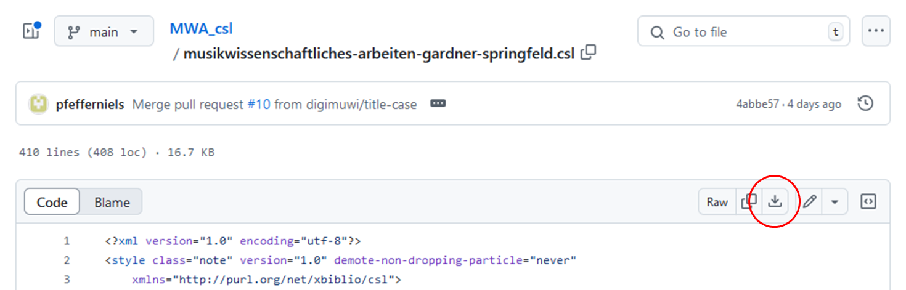
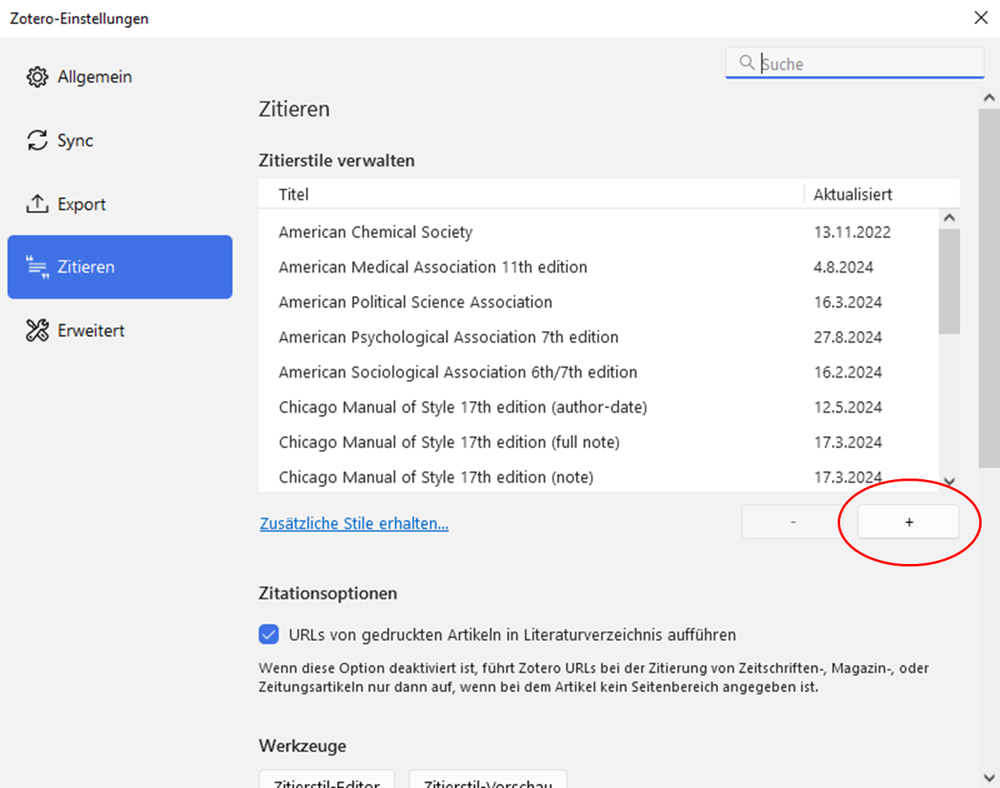

How To Zotero: Gardner/Springfeld-CSL
Niels Pfeffer, Thomas Hua, letzte Änderung am 2025-11-26.
1 Basics
1.1 Installation
In diesem Guide wird davon ausgegangen, dass das
Literaturverwaltungsprogramm Zotero bereits installiert haben.
Für Hinweise zur Installation siehe Zotero-Homepage.
In Zotero werden Zitierstile durch .csl-Dateien definiert.
Die aktuellste Version der Gardner/Springfeld-CSL finden Sie im
offiziellen GitHub-Repository unter musikwissenschaftliches-arbeiten-gardner-springfeld.csl.
Dort können Sie mit einem Klick auf den Downloadknopf die Datei
herunterladen.

+-Knopf
öffnet sich ein Dateiauswahldialog. Navigieren Sie dort zu der gerade
runtergeladenen .csl-Datei und öffnen Sie diese.

1.2 Wie lege ich eine neue Literatur an?
Es gibt zwei Arten, einen neuen Eintrag anzulegen: Manuell oder über die automatische Importfunktion. In jedem Fall ist es wichtig, dass Sie die Felder korrekt befüllen, um einen korrekten Nachweis zu erhalten. Hinweise dazu finden Sie im folgenden Abschnitt.
Manueller Eintrag
Nutzen Sie dazu den +-Button in der oberen linken Ecke. Bevor Sie die Felder mit Informationen füllen, sollten Sie unbedingt die richtige Eintragsart auswählen, da die Felder, die Ihnen zur Verfügung stehen, je nach Eintragsart variieren.
Automatischer Import
Schneller ist der automatische Import. Am bequemsten funktioniert dies, in dem Sie in Ihrem Browser ein sogenanntes Connector-Plugin installieren.
Beispiele
Haben Sie beispielsweise auf JSTOR einen
interessanten Aufsatz gefunden, können Sie mit einem Klick auf das
Zoterosymbol einen Zotero-Eintrag erstellen, der alle wichtigen
Informationen und sogar das Volltext-PDF bereits enthält.
Die gleiche Vorgehensweise wird auch für RILM
empfohlen.
In der MGG Online empfiehlt es sich, zunächst auf den
Button “Zitieren” zu klicken und dann als Zitierstil RIS auszuwählen.
Anschließend laden Sie diese Datei herunter und importieren sie in
Zotero.
1.2.1 Häufige Probleme
Fast immer müssen Daten, die Sie automatisch importiert haben, nachbereitet werden. Häufige Probleme sind:
Falsche Publikationsform.
Abweichende Trennung von Titel und Untertitel. Nach Gardner/Springfeld soll hier ein Punkt stehen. Beim Import insbesondere aus OPAC-Katalogen werden Sie hier häufig einen von Leerzeichen umgebenen Doppelpunkt vorfinden.
Kein Title Case. Englischsprachige Publikationen sollten im Title Case nachgewiesen werden. Sie können das Feld Sprache auf den Wert “en” setzen. Damit wird der Titel beim Zitieren automatisch in Title Case umgewandelt.
2 Publikationsformen
2.1 Selbstständige Publikationen
2.1.1 Bücher
Eintragsart: Buch.
| Feld | Anmerkung |
|---|---|
| Autor | Vor- und Nachname sollten getrennt
eingegeben werden. Mit dem +-Knopf rechts können Sie
mehrere Autoren angeben. |
| Titel | Achten Sie darauf, Titel und Untertitel
mit einem Punkt zu trennen und englische Titel im Title Case anzugeben.
Sie können unter dem ...-Knopf Titel automatisch in Title
Case umformen. |
| Ort | |
| Datum | Tragen Sie hier das Jahr ein |
| Auflage | Geben Sie hier lediglich eine Zahl ein, so wird diese als hochgestellte Zahl vor dem Jahr ausgegeben. Bei weiteren Informationen (z. B. “zweite und verbesserte Auflage”) werden diese als eigenständiger Text ausgegeben. |
2.1.2 Bücher in gezählten Reihen
Um eine gezählte Reihe anzugeben, nutzen Sie die Felder Reihe und Nummer der Reihe. Die Reihe wird nur dann ausgegeben, wenn beide Felder gesetzt wurden.
2.1.3 Unveröffentlichte oder online publizierte Hochschulschriften
Eintragsart: Dissertation.
| Feld | Anmerkung |
|---|---|
| Art | Hier können Sie z. B. “Diss” oder “Masterarbeit” angeben |
| Universität | Geben Sie hier die Hochschule oder Universität ein, bei der Arbeit eingereicht wurde. |
2.1.4 Reprints
Reprints lassen sich momentan in Zotero nicht vollständig abbilden. Als Workaround können Sie das Feld Auflage nutzen, um Informationen zum Reprint einzugeben, z. B. “Faksimile-Nachdruck unter dem Titel Musikalisches Lexikon”.
2.2 Unselbstständige Publikationen
Eintragsart: Enzyklopädieartikel.
| Feld | Anmerkung |
|---|---|
| Titel | Geben Sie hier den Titel des Artikels an … |
| Titel der Enzyklopädie | …und hier den Titel des Lexikons bzw. der Enzyklopädie. |
| Autor und Herausgeber | Direkt unter dem Titel können Sie den
Namen des Autors angeben. Um den Herausgeber anzugeben, klicken Sie auf
den +-Knopf rechts. Nun sollte ein weiteres Feld
“Herausgeber” erscheinen. |
2.2.1 Hinweise zu speziellen Lexika
MGG2
| Feld | Anmerkung |
|---|---|
| Auflage | “2., neubearbeitete Ausgabe” |
| Band | Tragen Sie hier auch den Teil der MGG ein, also z. B. “Sachteil, Bd. 5” |
| Seiten | Geben Sie hier die Spaltenzahlen mit dem Zusatz “Sp.” ein. Zotero erkennt, dass es sich um eine nicht-numerische Seitenzahl handelt und wird den ansonsten automatischen Zusatz “S. […]” weglassen. |
NG2
| Feld | Anmerkung |
|---|---|
| Auflage | “2., neubearbeitete Ausgabe” eintragen. |
2.2.2 Artikel in Onlinelexika (GMO)
Lassen Sie die Felder Ort und Datum leer und nutzen Sie stattdessen: Titel, Autor, Titel der Enzyklopädie, URL und Heruntergeladen am.
2.2.3 Aufsätze in Sammelpublikationen
Nutzen Sie Buchteil als Eintragsart. Aufsätze in Kongressberichten Nutzen Sie Konferenzpaper als Eintragsart. Informationen zu Titel und Ort des Kongresses nehmen in den Titel des Konferenzbandes auf, nicht in die separat dafür vorgesehenen Felder. Aufsätze in Festschriften Nutzen Sie die normale Form (s. o. “Aufsätze in Sammelpublikationen”). Aufsätze in wissenschaftlichen Zeitschriften oder Jahrbüchern Nutzen Sie “Zeitschriftenartikel” als Eintragsart.
| Feld | Anmerkung |
|---|---|
| Publikation | Hier tragen Sie den Namen der Zeitschrift ein, … |
| Band | …hier den Jahrgang ein … |
| Ausgabe | …und hier das Heft. |
| Zeitschriftenabkürzung | Es ist bei bekannten und oft zitierten Zeitschriften sinnvoll, dieses Feld zu setzen. Eine Übersicht über geläufige Abkürzungen finden Sie im ersten Band der MGG2. |
| DOI | Bei Onlinezeitschriften sollten Sie hier
die DOI des Aufsatzes eintragen, also z. B. 10.31751/1188.
Beim Zitieren wird automatisch ein vollständiger Link ergänzt. |
| URL | Sofern eine DOI gesetzt ist, wird dieses Feld beim Zitieren ignoriert. Es ist nur relevant, wenn keine DOI verknüpft ist. |
2.2.4 Artikel in Zeitungen oder Magazinen
Eintragsart: Zeitungsartikel (Achtung, nicht Zeitschriftenartikel).
| Feld | Anmerkung |
|---|---|
| Publikation | Name der Zeitung. |
2.2.5 Dokumente in Briefausgaben oder Dokumentensammlungen
Nehmen Sie hier nur die Briefausgabe oder Dokumentensammlung selbst in Zotero auf (als Buch). Beim Zitieren geben Sie manuell die Angaben zum entsprechenden Dokument an und nutzen Zotero lediglich für den zweiten Teil der Angabe, z. B.
Brief von Unger an Graf Esterhazy, Wien, 20. August 1820, zitiert nach: [hier Briefausgabe hier mit Zotero einfügen].